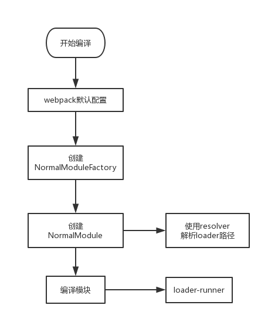

NormalModuleFactory和ContextModuleFactory。它们相当于是两个类工厂，通过其可以创建相应的NormalModule和ContextModule
loader是导出为一个函数的node模块。该函数在loader转换资源的时候调用。给定的函数将调用loader API，并通过this上下文访问。
匹配(test)单个 loader，你可以简单通过在 rule 对象设置 path.resolve 指向这个本地文件
{
test: /\.js$/
use: [
{
loader: path.resolve('path/to/loader.js'),
options: {/* ... */}
}
]
}
，你可以使用 resolveLoader.modules 配置，webpack 将会从这些目录中搜索这些 loaders。
resolveLoader: {
modules: [path.resolve('node_modules'), path.resolve(__dirname, 'src', 'loaders')]
},
npm模块根目录下执行npm link,把本地模块注册到全局npm link loader-name,把第2步注册到全局的本地 npm 模块链接到项目的 node_modules目录 下，其中的loader-name是指在第1步中的 package.json 文件中配置的模块名称npm link
resolveLoader: {
alias: {
"babel-loader": resolve('./loaders/babel-loader.js'),
"css-loader": resolve('./loaders/css-loader.js'),
"style-loader": resolve('./loaders/style-loader.js'),
"file-loader": resolve('./loaders/file-loader.js'),
"url-loader": resolve('./loaders/url-loader.js')
}
},
this.callback(err, values...) 函数，返回任意数量的值JavaScript 代码的字符串或者 buffer。第二个参数值是 SourceMap,它是个 JavaScript 对象loader 的时候，请记住它们会以相反的顺序执行。取决于数组写法格式，从右向左或者从下向上执行。保证输出模块化。loader 生成的模块与普通模块遵循相同的设计原则。
确保 loader 在不同模块转换之间不保存状态。每次运行都应该独立于其他编译模块以及相同模块之前的编译结果。
loader-utils 包。它提供了许多有用的工具，但最常用的一种工具是获取传递给 loader 的选项
schema-utils 包配合 loader-utils，用于保证 loader 选项，进行与 JSON Schema 结构一致的校验
如果一个 loader 使用外部资源（例如，从文件系统读取），必须声明它。这些信息用于使缓存 loaders 无效，以及在观察模式(watch mode)下重编译。
根据模块类型，可能会有不同的模式指定依赖关系。例如在 CSS 中，使用 @import 和 url(...) 语句来声明依赖。这些依赖关系应该由模块系统解析。
loader-utils 中的 stringifyRequest 方法，可以将绝对路径转化为相对路径。peerDependency 引入。package.json 中指定所需的确定版本。module.exports = function(source) {
// 关闭该 Loader 的缓存功能
this.cacheable(false);
return source;
};
module.exports = function(source) {
// 告诉 Webpack 本次转换是异步的，Loader 会在 callback 中回调结果
var callback = this.async();
someAsyncOperation(source, function(err, result, sourceMaps, ast) {
// 通过 callback 返回异步执行后的结果
callback(err, result, sourceMaps, ast);
});
};
Loader有些场景下还需要返回除了内容之外的东西。
module.exports = function(source) {
// 通过 this.callback 告诉 Webpack 返回的结果
this.callback(null, source, sourceMaps);
// 当你使用 this.callback 返回内容时，该 Loader 必须返回 undefined，
// 以让 Webpack 知道该 Loader 返回的结果在 this.callback 中，而不是 return 中
return;
};
完整格式
this.callback(
// 当无法转换原内容时，给 Webpack 返回一个 Error
err: Error | null,
// 原内容转换后的内容
content: string | Buffer,
// 用于把转换后的内容得出原内容的 Source Map，方便调试
sourceMap?: SourceMap,
// 如果本次转换为原内容生成了 AST 语法树，可以把这个 AST 返回，
// 以方便之后需要 AST 的 Loader 复用该 AST，以避免重复生成 AST，提升性能
abstractSyntaxTree?: AST
);
UTF-8格式编码的字符串。file-loader,就需要 Webpack 给 Loader 传入二进制格式的数据。
为此，你需要这样编写 Loadermodule.exports = function(source) {
// 在 exports.raw === true 时，Webpack 传给 Loader 的 source 是 Buffer 类型的
source instanceof Buffer === true;
// Loader 返回的类型也可以是 Buffer 类型的
// 在 exports.raw !== true 时，Loader 也可以返回 Buffer 类型的结果
return source;
};
// 通过 exports.raw 属性告诉 Webpack 该 Loader 是否需要二进制数据
module.exports.raw = true;
Loader配置的optionsconst loaderUtils = require('loader-utils');
module.exports = function(source) {
// 获取到用户给当前 Loader 传入的 options
const options = loaderUtils.getOptions(this);
return source;
};
| 方法名 | 含义 |
|---|---|
this.context |
当前处理文件的所在目录，假如当前 Loader 处理的文件是 /src/main.js，则 this.context 就等于 /src |
this.resource |
当前处理文件的完整请求路径，包括 querystring，例如 /src/main.js?name=1。 |
this.resourcePath |
当前处理文件的路径，例如 /src/main.js |
this.resourceQuery |
当前处理文件的 querystring |
this.target |
等于 Webpack 配置中的 Target |
this.loadModule |
但 Loader 在处理一个文件时，如果依赖其它文件的处理结果才能得出当前文件的结果时,就可以通过 this.loadModule(request: string, callback: function(err, source, sourceMap, module)) 去获得 request 对应文件的处理结果 |
this.resolve |
像 require 语句一样获得指定文件的完整路径，使用方法为 resolve(context: string, request: string, callback: function(err, result: string)) |
this.addDependency |
给当前处理文件添加其依赖的文件，以便再其依赖的文件发生变化时，会重新调用 Loader 处理该文件。使用方法为 addDependency(file: string) |
this.addContextDependency |
和 addDependency 类似，但 addContextDependency 是把整个目录加入到当前正在处理文件的依赖中。使用方法为 addContextDependency(directory: string) |
this.clearDependencies |
清除当前正在处理文件的所有依赖，使用方法为 clearDependencies() |
this.emitFile |
输出一个文件，使用方法为 emitFile(name: string, content: Buffer/string, sourceMap: {...}) |
loader-utils.stringifyRequest |
Turns a request into a string that can be used inside require() or import while avoiding absolute paths. Use it instead of JSON.stringify(...) if you're generating code inside a loader 把一个请求字符串转成一个字符串，以便能在require或者import中使用以避免绝对路径。如果你在一个loader中生成代码的话请使用这个而不要用JSON.stringify() |
loader-utils.interpolateName |
Interpolates a filename template using multiple placeholders and/or a regular expression. The template and regular expression are set as query params called name and regExp on the current loader's context. 使用多个占位符或一个正则表达式转换一个文件名的模块。这个模板和正则表达式被设置为查询参数，在当前loader的上下文中被称为name或者regExp |
cnpm i webpack webpack-cli webpack-dev-server html-webpack-plugin @babel/core @babel/preset-env babel-loader css-loader file-loader less less-loader style-loader url-loader -D
const path = require('path');
const HtmlWebpackPlugin = require('html-webpack-plugin');
module.exports = {
mode: 'development',
context: process.cwd(),
devtool: 'source-map',
entry: "./src/index.js",
output: {
path: path.resolve(__dirname, "dist"),
filename: "bundle.js"
},
resolveLoader: {
modules: [path.resolve('./loaders'), 'node_modules']
},
devServer: {
contentBase: path.resolve(__dirname, 'dist')
},
module: {
rules: [
{
test: /\.jsx?$/,
use: {
loader: "babel-loader"
},
include: path.join(__dirname, "src"),
exclude: /node_modules/
}
]
},
plugins: [
new HtmlWebpackPlugin({
template: './src/index.html'
})
]
};
src\index.js
const sum = (a, b) => {
return a + b;
}
console.log(sum(1, 2));
src\index.html
<!DOCTYPE html>
<html lang="en">
<head>
<meta charset="UTF-8">
<meta name="viewport" content="width=device-width, initial-scale=1.0">
<meta http-equiv="X-UA-Compatible" content="ie=edge">
<title>Document</title>
</head>
<body>
<div id="root"></div>
</body>
</html>
| 属性 | 值 |
|---|---|
| this.request | /loaders/babel-loader.js!/src/index.js' |
| this.userRequest | /src/index.js |
| this.rawRequest | ./src/index.js |
| this.resourcePath | /src/index.js |
const babel = require("@babel/core");
function loader(source) {
//C:\vipdata\prepare6\zhufeng_loader\loaders\babel-loader.js!C:\vipdata\prepare6\zhufeng_loader\src\index.js
console.log('this.request', this.request);
const options = {
presets: ['@babel/preset-env'],
//sourceMaps: true 如果没有此参数，则不会生成sourcemap文件
//注意此处的sourceMap是从转译前的代码到转译后的代码的map映射,如果此处不生成无法调试真正的源码了
sourceMaps: true,
//如果没有此参数则生成的map文件里文件中unknown
filename: this.request.split('!')[1].split('/').pop()
}
//在webpack.config.js中 增加devtool: 'source-map',这个source-map是从转译后的源码到bundle.js之间的map映射
let { code, map, ast } = babel.transform(source, options);
return this.callback(null, code, map, ast);
}
module.exports = loader;
本案例是是学习如何编写loader以及如何通过
this.callback返回多个值
loaders\banner-loader.js
const loaderUtils = require('loader-utils');
const validateOptions = require('schema-utils');
const fs = require('fs');
function loader(source) {
//把loader改为异步,任务完成后需要手工执行callback
let cb = this.async();
//启用loader缓存
this.cacheable && this.cacheable();
//用来验证options的合法性
let schema = {
type: 'object',
properties: {
filename: {
type: 'string'
},
text: {
type: 'string'
}
}
}
//通过工具方法获取options
let options = loaderUtils.getOptions(this);
//用来验证options的合法性
validateOptions(schema, options);
let {filename } = options;
fs.readFile(filename, 'utf8', (err, text) => {
cb(err, text + source);
});
}
module.exports = loader;
loaders\banner.js
/**copyright: zhufengjiagu*/
webpack.config.js
module: {
rules: [
{
test: /\.jsx?$/,
+ use: [{
+ loader: 'banner-loader',
+ options: { filename: path.resolve(__dirname, 'loaders/banner.js') }
+ }, {
loader: "babel-loader"
}],
include: path.join(__dirname, "src"),
exclude: /node_modules/
}
]
},
file-loader 并不会对文件内容进行任何转换，只是复制一份文件内容，并根据配置为他生成一个唯一的文件名。loader-utils用法 const { getOptions, interpolateName } = require('loader-utils');
function loader(content) {
let options=getOptions(this)||{};
let url = interpolateName(this, options.filename || "[hash].[ext]", {content});
this.emitFile(url, content);
return `module.exports = ${JSON.stringify(url)}`;
}
loader.raw = true;
module.exports = loader;
loaderUtils.interpolateName 方法可以根据 options.name 以及文件内容生成一个唯一的文件名 url（一般配置都会带上hash，否则很可能由于文件重名而冲突）this.emitFile(url, content) 告诉 webpack 我需要创建一个文件，webpack会根据参数创建对应的文件，放在 public path 目录下module.exports = ${JSON.stringify(url)},这样就会把原来的文件路径替换为编译后的路径let { getOptions } = require('loader-utils');
var mime = require('mime');
function loader(source) {
let options=getOptions(this)||{};
let { limit, fallback='file-loader' } = options;
if (limit) {
limit = parseInt(limit, 10);
}
const mimeType=mime.getType(this.resourcePath);
if (!limit || source.length < limit) {
let base64 = `data:${mimeType};base64,${source.toString('base64')}`;
return `module.exports = ${JSON.stringify(base64)}`;
} else {
let fileLoader = require(fallback || 'file-loader');
return fileLoader.call(this, source);
}
}
loader.raw = true;
module.exports = loader;
a!b!c!module为例,正常调用顺序应该是c=>b=>a,但是真正调用顺序是 a(pitch)=>b(pitch)=>c(pitch)=>c=>b=>a,如果其中任何一个pitching loader返回了值就相当于在它以及它右边的loader已经执行完毕b返回了字符串result_b, 接下来只有a会被系统执行，且a的loader收到的参数是result_bjs代码(一个module的代码，含有类似module.export语句)的loader,另一种是不能作为最左边loader的其他loaderloader 连接起来，比如style-loader!css-loader!
问题是css-loader的返回值是一串js代码，如果按正常方式写style-loader的参数就是一串代码字符串style-loader里执行require(css-loader!resources)pitch与loader本身方法的执行顺序图
|- a-loader `pitch`
|- b-loader `pitch`
|- c-loader `pitch`
|- requested module is picked up as a dependency
|- c-loader normal execution
|- b-loader normal execution
|- a-loader normal execution
loaders\loader1.js
function loader(source) {
console.log('loader1',this.data);
return source+"//loader1";
}
loader.pitch = function (remainingRequest,previousRequest,data) {
data.name = 'pitch1';
console.log('pitch1');
}
module.exports = loader;
loaders\loader2.js
function loader(source) {
console.log('loader2');
return source+"//loader2";
}
loader.pitch = function (remainingRequest,previousRequest,data) {
console.log('remainingRequest=',remainingRequest);
console.log('previousRequest=',previousRequest);
console.log('pitch2');
//return 'console.log("pitch2")';
}
module.exports = loader;
loaders\loader3.js
function loader(source) {
console.log('loader3');
return source+"//loader3";
}
loader.pitch = function () {
console.log('pitch3');
}
module.exports = loader;
{
test: /\.js$/,
use: ['loader1', 'loader2', 'loader3']
}
run-loader.js
//@ts-check
const path = require('path');
const fs = require('fs');
const readFile = fs.readFileSync;
//入口文件
let entry = './src/title.js';
let options = {
resource: path.join(__dirname, entry),//要加载的资源,它是个绝对路径
loaders: [
path.join(__dirname, 'loaders/a-loader.js'),//C:\vipdata\lesson\201911projects\7.loader\loaders\a-loader.js
path.join(__dirname, 'loaders/b-loader.js'),//C:\vipdata\lesson\201911projects\7.loader\loaders\b-loader.js
path.join(__dirname, 'loaders/c-loader.js')//C:\vipdata\lesson\201911projects\7.loader\loaders\c-loader.js
]
}
function createLoaderObject(loaderPath) {
let loaderObject = { data: {} };
loaderObject.path = loaderPath;// 存放此loader的绝地路径
loaderObject.normal = require(loaderPath);
loaderObject.pitch = loaderObject.normal.pitch;
return loaderObject;
}
function runLoaders(options, finalCallback) {
let loaderContext = {};//这个对象将会成为webpack loader中的this
let resource = options.resource;//获取要加载的资源 C:\vipdata\lesson\201911projects\7.loader\src\title.js
let loaders = options.loaders;
loaders = loaders.map(createLoaderObject);
loaderContext.loaderIndex = 0;//当前正在执行的loader的索引
loaderContext.readResource = readFile;//指定一个读取文件的方法 readFile
loaderContext.resource = resource;//resource放置着要读取的资源
loaderContext.loaders = loaders;//缓存了loaderObject的数组
Object.defineProperty(loaderContext, 'request', {
get() {
return loaderContext.loaders.map(loaderObject => loaderObject.path)
.concat(loaderContext.resource).join('!')
}
});
Object.defineProperty(loaderContext, 'previousRequest', {
get() {
return loaderContext.loaders.slice(0, loaderContext.loaderIndex).map(loaderObject => loaderObject.path)
.join('!')
}
});
Object.defineProperty(loaderContext, 'remainingRequest', {
get() {
return loaderContext.loaders.slice(loaderContext.loaderIndex + 1).map(loaderObject => loaderObject.path)
.concat(loaderContext.resource).join('!')
}
});
Object.defineProperty(loaderContext, 'data', {
get() {
return loaderContext.loaders[loaderContext.loaderIndex].data;
}
});
iteratePitchingLoaders(loaderContext, finalCallback);
//在这里要读取要加载的模块的内容
function processResource(loaderContext, finalCallback) {
let buffer = loaderContext.readResource(loaderContext.resource);// 读取文件的内容
iterateNormalLoaders(loaderContext, buffer, finalCallback);//进行正掌中的loader执行
}
function convertArgs(args, raw) {
if (!raw && Buffer.isBuffer(args))
args = args.toString("utf8");
else if (raw && typeof args === "string")
args = new Buffer(args, "utf8"); // eslint-disable-line
}
//执行正常的
function iterateNormalLoaders(loaderContext, args, finalCallback) {
if (loaderContext.loaderIndex < 0) {
return finalCallback(null, args);
}
let currentLoaderObject = loaderContext.loaders[loaderContext.loaderIndex];
let normalFn = currentLoaderObject.normal;//拿到当前的normal函数
let isSync = true;//默认当前的执行模式是同步模式
const innerCallback = loaderContext.callback = (err, args) => {
loaderContext.loaderIndex--;
iterateNormalLoaders(loaderContext, args, finalCallback)
}
loaderContext.async = () => {//如果调了它，会把同步变成异步
isSync = false;
return innerCallback;
}
args = convertArgs(args, normalFn.raw)
args = normalFn.call(loaderContext, args);
if (isSync) {//如果是同步的话。
loaderContext.loaderIndex--;
iterateNormalLoaders(loaderContext, args, finalCallback);
} else {
//如果是异步，就不会再递归迭代了
}
}
function iteratePitchingLoaders(loaderContext, finalCallback) {
if (loaderContext.loaderIndex >= loaderContext.loaders.length) {
loaderContext.loaderIndex--;//因为已经越界了,所以让索引减1
return processResource(loaderContext, finalCallback);
}
let currentLoaderObject = loaderContext.loaders[loaderContext.loaderIndex];//0 获取当前的loaderObject
let pitchFn = currentLoaderObject.pitch;
if (!pitchFn) {//如果没有pitch函数，则直接 跳过当前loader,执行下一个loader
loaderContext.loaderIndex++;
return iteratePitchingLoaders(loaderContext, finalCallback);
}
let args = pitchFn.call(loaderContext, loaderContext.remainingRequest, loaderContext.previousRequest, loaderContext.data);
if (args) {//如果有返回值，则跳过当前和后面的normal函数以及读取模块文件的逻辑 ，直接把结果返回给前一个loader的normal参数
loaderContext.loaderIndex--;
return iterateNormalLoaders(loaderContext, args, finalCallback);
} else {
loaderContext.loaderIndex++;
return iteratePitchingLoaders(loaderContext, finalCallback);
}
}
}
console.time('cost');
runLoaders(options, (err, result) => {
// title//c-loader//b-loader//a-loader
console.log('经过loader编译后的结果', result);
console.timeEnd('cost');
});
let result = [useLoadersPost,useLoaders,useLoadersPre];
loaders = results[0].concat(loaders, results[1], results[2]);
useLoadersPost+inlineLoader+useLoaders(normal loader)+useLoadersPre
| 符号 | 变量 | 含义 | |
|---|---|---|---|
-! |
noPreAutoLoaders | 不要前置和普通loader | Prefixing with -! will disable all configured preLoaders and loaders but not postLoaders |
! |
noAutoLoaders | 不要普通loader | Prefixing with ! will disable all configured normal loaders |
!! |
noPrePostAutoLoaders | 不要前后置和普通loader,只要内联loader | Prefixing with !! will disable all configured loaders (preLoaders, loaders, postLoaders) |
src\index.js
import './index.less';
src\index.less
@color:red;
#root{
color:@color;
}
src\index.html
<div id="root">hello</div>
webpack.config.js
{
test: /\.less$/,
use: [
'style-loader',
'less-loader'
]
}
let less = require('less');
function loader(source) {
let callback = this.async();
less.render(source, { filename: this.resource }, (err, output) => {
callback(err, output.css);
});
}
module.exports = loader;
function loader(source) {
let script=(`
let style = document.createElement("style");
style.innerHTML = ${JSON.stringify(source)};
document.head.appendChild(style);
module.exports = "";
`);
return script;
}
module.exports = loader;
let less = require('less');
function loader(source) {
let callback = this.async();
less.render(source, { filename: this.resource }, (err, output) => {
callback(err, `module.exports = ${JSON.stringify(output.css)}`);
});
}
module.exports = loader;
let loaderUtils = require("loader-utils");
function loader(source) {
}
//https://github.com/webpack/webpack/blob/v4.39.3/lib/NormalModuleFactory.js#L339
loader.pitch = function (remainingRequest, previousRequest, data) {
//C:\webpack-analysis2\loaders\less-loader.js!C:\webpack-analysis2\src\index.less
console.log('previousRequest', previousRequest);//之前的路径
//console.log('currentRequest', currentRequest);//当前的路径
console.log('remainingRequest', remainingRequest);//剩下的路径
console.log('data', data);
// !! noPrePostAutoLoaders 不要前后置和普通loader
//__webpack_require__(/*! !../loaders/less-loader.js!./index.less */ "./loaders/less-loader.js!./src/index.less");
let style = `
var style = document.createElement("style");
style.innerHTML = require(${loaderUtils.stringifyRequest(this, "!!" + remainingRequest)});
document.head.appendChild(style);
`;
return style;
}
module.exports = loader;
css-loader 的作用是处理css中的 @import 和 url 这样的外部资源src\index.js
require('./style.css');
@import './global.css';
.avatar {
width: 100px;
height: 100px;
background-image: url('./baidu.png');
background-size: cover;
}
div{
color:red;
}
body {
background-color: green;
}
+ {
+ test: /\.css$/,
+ use: [
+ 'style-loader',
+ 'css-loader'
+ ]
+ },
+ {
+ test: /\.png$/,
+ use: [
+ 'file-loader'
+ ]
+ }
loaders\css-loader.js
var postcss = require("postcss");
var loaderUtils = require("loader-utils");
var Tokenizer = require("css-selector-tokenizer");
const cssLoader = function (inputSource) {
const cssPlugin = (options) => {
return (root) => {
root.walkAtRules(/^import$/i, (rule) => {
rule.remove();
options.imports.push(rule.params.slice(1, -1));
});
root.walkDecls((decl) => {
var values = Tokenizer.parseValues(decl.value);
values.nodes.forEach(function (value) {
value.nodes.forEach(item => {
if (item.type === "url") {
item.url = "`+require(" + loaderUtils.stringifyRequest(this, "!!" + item.url) + ")+`";
}
});
});
decl.value = Tokenizer.stringifyValues(values);
});
};
}
let callback = this.async();
let options = { imports: [] };
let pipeline = postcss([cssPlugin(options)]);
pipeline.process(inputSource).then((result) => {
let importCss = options.imports.map(url => "`+require(" + loaderUtils.stringifyRequest(this, "!!css-loader!" + url) + ")+`").join('\r\n');
callback(
null,
'module.exports=`' + importCss + '\r\n' + result.css + '`'
);
});
};
module.exports = cssLoader;
AtRule @xxx的这种类型，如@screenComment 注释Rule 普通的css规则decl 指的是每条具体的css规则rule 作用于某个选择器上的css规则集合root.walkDecls(decl => {
decl.prop = decl.prop.split('').reverse().join('');
});
postcss.parse方法拿到css ast后分析处理optsresult.css，获得处理结果的css字符串export default postcss.plugin('postcss-plugin-name', function (opts) {
opts = opts || {};
return function (root, result) {
// 处理逻辑
};
});